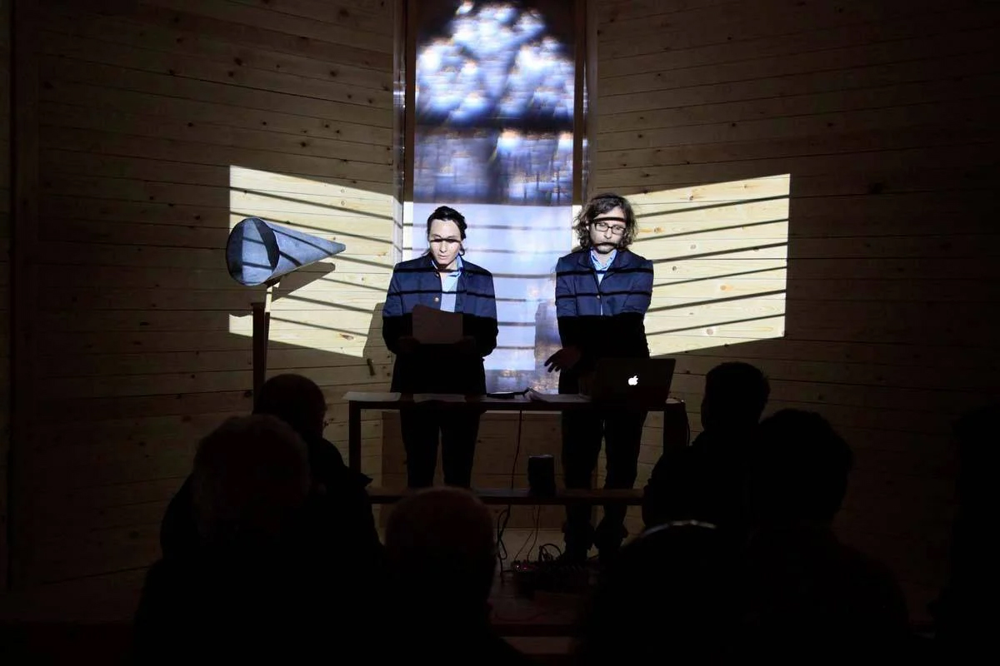
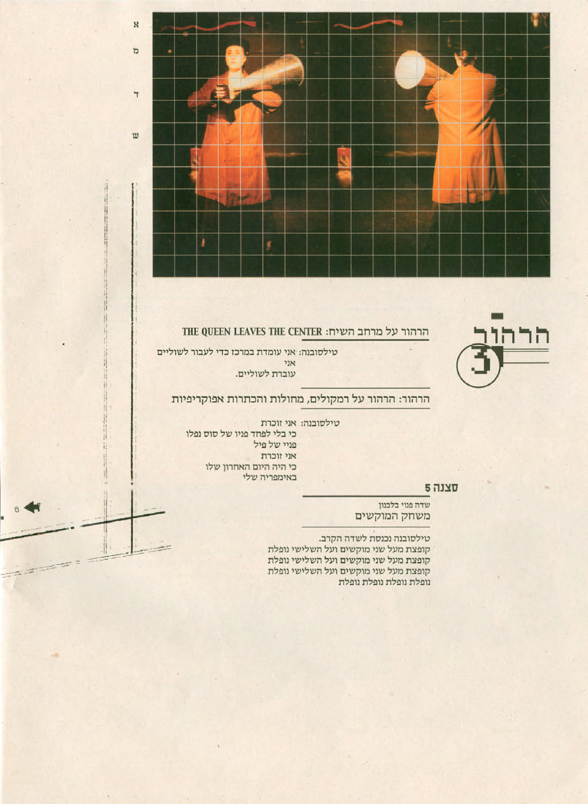
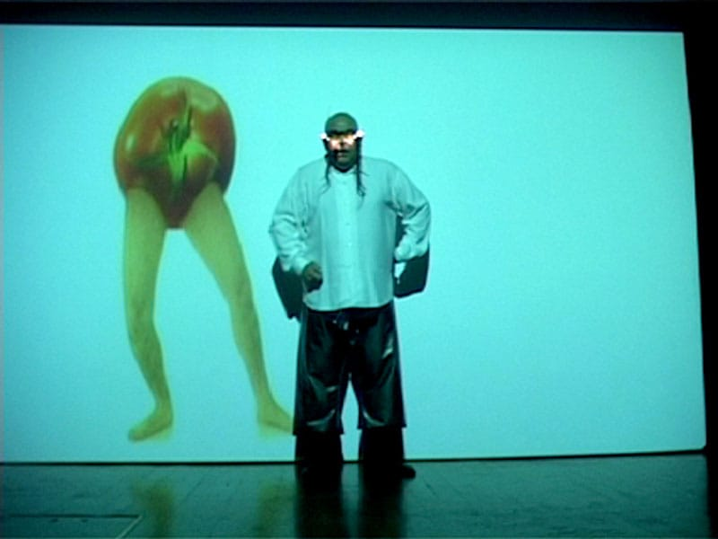
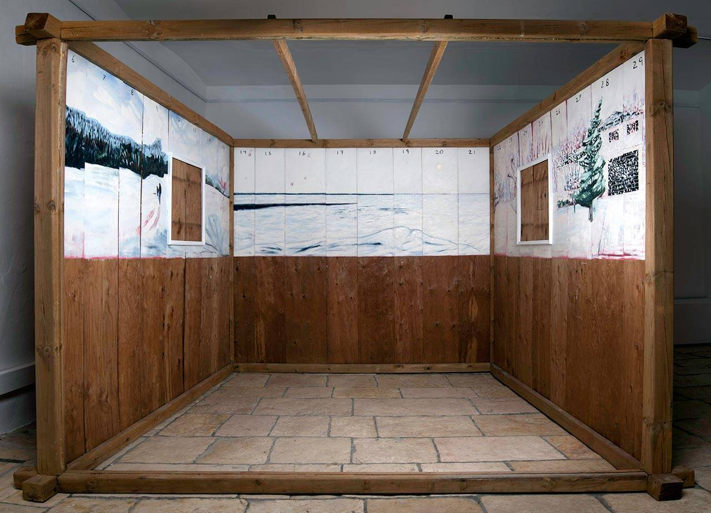

קבוצת סלה־מנקה
אדם/קבוצה

קבוצת סלה-מנקה, מתוך פרפורמנס. צילום: גיא יצחקי
קבוצת יוצרים עצמאית בתחומים מגוונים כגון מיצב, פרפורמנס, וידאו, שירה ואמנות ציבורית. הקבוצה פועלת בשיתוף אמנים רבים, אוצרים ומוסדות תרבות בישראל ומחוצה לה. לאורך השנים השתתפו בפרויקטים השונים שלה יותר מ־500 אמנים, אוצרים, קולנוענים, משוררים, אדריכלים ויוצרים מתחומים אחרים.
לאה מאואס ודיאגו רוטמן נולדו וגדלו בבואנוס איירס בשנות ה־70. מאואס למדה שם פסיכולוגיה ותקשורת והשתתפה בחוג תאטרון ורוטמן למד קולנוע ותאטרון. שניהם עלו לישראל בשנת 1995 והמשיכו בלימודי התאטרון בארץ. הם נפגשו במעונות הסטודנטים בת"א. לאחר מכן רוטמן נסע לאירופה ובשובו עשה דוקטורט בירושלים.
רוטמן עבד במרכז התרבות "בית ארגנטינה", הקים ספריה ועבד כספרן ובמקביל החל לעשות תערוכות ואירועי אמנות. השם סלה־מנקה (בספרדית "ללא אולם") ניתן לפעולות שעשו ב"בית ארגנטינה" ובהמשך הפך לשם הקבוצה. יצירתם הראשונה, מחזה בשם "הרהוריה של מלכה בגלות", עלתה בזירה הבינתחומית בשנת 2000. עבודתם הבאה "כפר פוטיומקין" היתה מעין פסטיבל שכלל עבודות פרפורמנס, אמנות פלסטית, וידאו והקרנת הסרט "אוניית הקרב פוטיומקין".
העבודה האמנותית של סלה־מנקה עוסקת בנושאים פוליטיים וחברתיים עם דגש על המתח בין אסתטיקה של אמנות גבוהה לנמוכה. הפעילות מתאפיינת ביצירה עצמאית וביקורתית שמתייחסת לסביבתה ומנסה לפתח בחברה ובתחום פעולתה שיח ביקורתי ומחויב. הקבוצה הציגה בתערוכות יחיד ותערוכות קבוצתיות במקומות רבים וביניהם מוזיאון טייט מודרן בלונדון, Eyebeam בניו יורק, טירת אוּיזדובסקי בוורשה, בלאקבוקס בבלפסט, PFA בברקלי, מוזיאון ישראל, המרכז לאמנות עכשווית בתל אביב, גלריה ברבור ועוד. בנוסף עסקו חברי הקבוצה במספר פרויקטים מתמשכים בשיתוף אמנים רבים.

המופע "הרהוריה של מלכה בגלות", מתוך גיליון "הערת שוליים" 1

אורי קצנשטיין באירוע "הערה" 10

Permanent Residency, מיצב של הקבוצה. צילום: יאיר מיוחס
בעשור הראשון של המאה ה־21 הקימו מאואס ורוטמן קהילה של עשרות אמנים ואירגנו אירועים פסטיבליים של אמנות עכשווית, שכונו "הערה". אירועים אלה היו ללא תלות בממסד, התיחסו לתופעות שונות מזווית ביקורתית, עסקו בקשר בין אמנות למרחב ולזמן בהם האירוע מתקיים והתקיימו לערב אחד. כל אירוע התקיים באתר עם משמעות היסטורית אן חברתית ולווה בהוצאת גיליון חדש של מגזין "הערת שוליים", שנמכר באירוע. האירועים, שהחלו כמעין ניסוי, כללו שיתופי פעולה בין אמנים רבים, היו בעלי אופי מחתרתי ופעלו מחוץ לחללים הקונבנציונליים של תחום האמנות. עבודות האמנות באירועים היו מותאמות חלל (site specific) וביקשו להגיב בדרכם לסביבתם – ירושלים השסועה והסובלת מפיגועים. עם השנים אירועי "הערה" גדלו והצליחו ליצור חיבורים מרתקים בין אמנים שפעלו במדיומים שונים – אמנות חזותית, תיאטרון, שירה, וידאו וסאונד. גם הקהל הלך וגדל ממאות לאלפים. האירוע האחרון "הערה 12" התקיים ב־2014 בבית הנסן כאירוע מסכם ולווה בהוצאת הספר "הערה" שכלל מאמרים (חלקם נכתבו במיוחד וחלקם מתוך גליונות "הערת שוליים") ויצירות מהעשיה האמנותית של "הערה". הקבוצה הוזמנה גם להציג אירועים בחו"ל לפי המודל שפיתחו, למשל בברלין, ליברפול ומקומות אחרים.
מעמותה – פרויקט נוסף של הקבוצה, הוא מרכז לעשיה, מפגש, מחקר ותצוגה. פעל בין 2009-2012 ב״בית על שם דניאלה פסל״ בעין כרם ומ-2013 בבית הנסן. הוקם כדי לאפשר לאמנים מתחומים שונים, אוצרים, אדריכלים, מעצבים וחוקרים ליצור תוך שיתוף פעולה וידע והתחדשות טכנולוגית. הפרויקט מורכב מחללי עבודה, מעבדות ובית מלאכה המיועדים לקדם, ללוות, לתמוך, ליזום ולהפיק פרויקטים אמנותיים, ומאפשר יצירת קהילת אמנים פעילה הכוללת פיתוח אישי לצד יצירה קולקטיבית המחוברת לזמן, למקום ולסביבה בה נוצרת ומבקשת גם להשפיע עליה. במרכז יש סיורים, סדנאות, תוכנית רזידנסי והוצאה לאור.
"המוזיאון של העכשווי" הוא פרויקט המשכי שהחל בעין-כרם ב־2010 במרכז "מעמותה ע"ש דניאלה פסל". בתערוכה הראשונה ב־2012 שסיכמה שלוש שנות פעילות בו, הוצגו עבודות שהתייחסו לתולדות הכפר עין כרם, לערכו ועתידו של הנוף הפסטורלי, בבניין עצמו, ובהיסטוריה שלו. מאואס ורוטמן הפכו את המבנה למעין מוזיאון פיקטיבי. הם הפכו חדר אחד ל"כנסיית הביקורת" ואת המרפסת ל"חדר אטום" והציגו בהם מיצגים המתיחסים לעולם האמנות, להיסטוריה של עין-כרם ולמקום הבניין ביחס לדברים. כמו כן מספרו את אבני הבניין. למעשה "המוזיאון של העכשווי" היה מעין מיצב אחד גדול. התערוכה השנייה של ״המוזיאון של העכשווי״ הוצגה במוזיאון חיפה לאמנות באוצרות פיל וגליה קולקטיב בשנת 2013. התערוכה השלישית "המחלקה האתנוגרפית של המוזיאון של העכשווי", עוסקת במפגשים בין אתנוגרפיה לאמנות, מסורתי לעכשווי, לאומי לפרטי תוך התיחסות לתרבות עממית בישראל וגם התיחסות להיבטים היסטוריים של מיקומה ב"בית החולים למצורעים – עזרת ישו" שנבנה על ידי הקהילה הפרוטסטנטית הגרמנית ב־1878. ב־2012 הוציאו לאור את קטלוג "המוזיאון של העכשווי" וב־2017 את הספר "המחלקה האתנוגרפית של המוזיאון של העכשווי", שמסכם במאמרים, מסמכים, קטלוג עבודות ודפי יצירה לילדים את פעילותה מאז הקמתה ב־2014 במרכז מעמותה בבית הנסן.